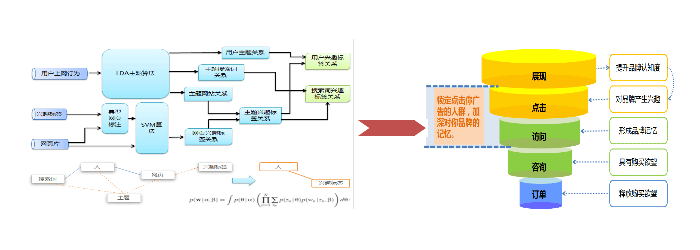
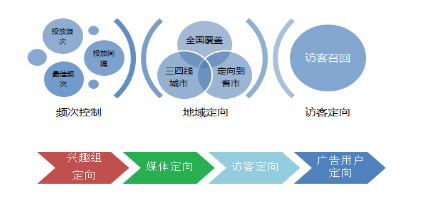
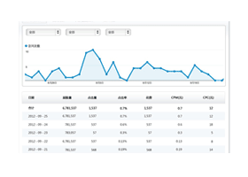
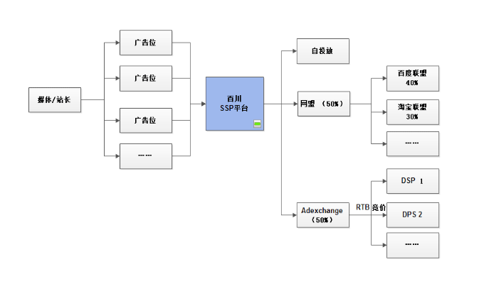

找到真正的目标受众人群；节省预算用于品牌推广与ROI广告展示活动；获取并保留用户、提高用户满意度和忠诚度
基于精准数据库的受众购买，将逐步取代传统的媒体版位购买成为新的趋势。 百川利用聚类主题模型挖掘用户兴趣标签，找到广告主目标受众人群，根据客户行业特别定制的专属用户行为模型，特别定制的专业词库，国际领先的兴趣训练模型，全面用户画像，领先的智选算法，确保客户营销目标高效实现。

可根据广告主需求，指定区域、媒体类型，投放时间，受众曝光频次等纬度进行策略投放。

强大的数据报表和分析功能，可以根据受众类别，媒体，广告位等多个维度进行评估，并在投放过程中不间断的预测及调整投放设置，并使用动态出价算法针对不同流量提供不同的出价策略，以达到广告活动的KPI目标。

抱歉！资料正在整理中...
如何提升自身广告收益；如何有效利用站内数据服务广告主。
媒体有流量但广告收入有限或达到瓶颈，媒体可将个别广告位托管给百川科技，由百川系统来优化广告位投放渠道，百川会收集该广告位所有投放会产生的数据，包括受众广告的广告行为、订单转换等数据，并通过系统特有的分析技术，了解不同渠道的广告收益，通过自有学习系统自动优化广告位投放渠道，同时媒体可灵活控制广告位的流量比例，最终达到广告利益最大化。百川科技将支持网盟（淘宝网盟，百度网盟等）、DSP等不同渠道的流量分发。

媒体/站长能灵活控制广告位在不同渠道的流量比例，并可配置自有广告优先投放权，媒体/站长在在满足自有客户投放考核后，将广告位托管给百川，由百川系统自动优化流量分发，媒体/站长也可自定义对比广告位价格时间窗口、调整流量比例等优化策略，同时针对优质广告位，可以设置底价，由DSP竞价，最终提升媒体/站长收益
媒体/站长有流量，用户数据无法变现，可添加百川分析代码，对媒体用户进行分析，百川拥有专利保护的人群分析模型，保证媒体/站长数据安全。媒体/站长可根据自身受众特征自定义人群，自用或开放给第三方，在人群开放上可限制或屏蔽第三方，支持不同人群不同媒体使用定价，真正实现数据变现，服务广告主。